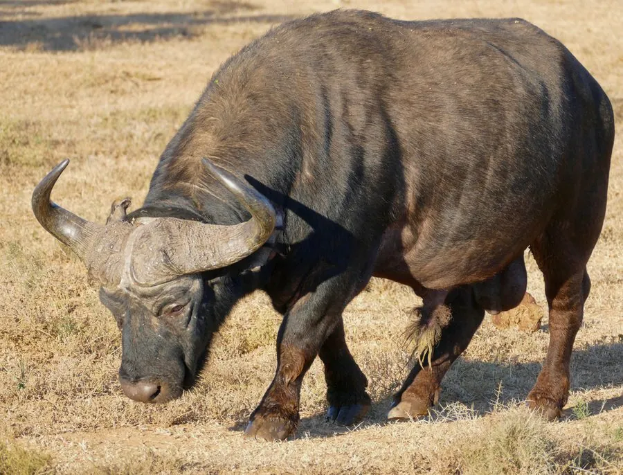

哺乳动物 · 动物界
非洲水牛 Syncerus caffer

非洲草原上的大型牛科动物，群体可达上千头，性情强悍，是“非洲五霸”之一，狮群也需谨慎对待。
- 分类
- 门脊索动物门纲哺乳纲目偶蹄目科牛科属水牛属
- 栖息环境
- 非洲稀树草原、疏林与湿地，需要充足水源和草场
- 地理分布
- 非洲撒哈拉以南，从东非草原到南非和西非的保护区
- 保护级别
- IUCN 近危（NT）
物种志
非洲水牛体长 2.1–3.4 米，尾长 0.5–1.1 米，肩高 1.0–1.7 米，体重 300–900 kg。它的体形粗壮，被毛为深褐至黑色，雄牛角粗大、基部愈合形成“角盾”，角先向下弯再向外上翻；耳朵大而下垂，尾端有簇毛。
非洲水牛分布于非洲撒哈拉以南的稀树草原、疏林和湿地，是非洲数量最多的大型食草动物之一。它们结成 50–1000 只的大群活动，由最年长的雌牛带领，雨季分散、旱季集中到水源附近。非洲水牛以草为主食，每天需饮水，性情强悍，遇险时牛群会集体反击，甚至追赶狮群、踩踏幼狮，是“非洲五霸”之一。雌兽妊娠期约 11 个月，每胎 1 仔。由于栖息地破碎、狩猎和疾病，部分种群下降，被列为近危。
形态与习性
- 食性以草为主，每天需要饮水
- 体长2.1–3.4 m，尾长 0.5–1.1 m
- 体重300–900 kg
- 寿命野外约 18–20 年
- 繁殖妊娠期约 11 个月，每胎 1 仔
- 社会结构结成 50–1000 只的大群，由年长雌牛带领
- 角雄牛角粗大，基部愈合形成角盾
趣味知识
- 非洲水牛性情强悍，遇险时牛群会集体反击狮群。
- 它是“非洲五霸”之一，也是非洲数量最多的大型食草动物之一。
- 雄牛的角基部愈合，形成一块坚硬的“角盾”。
- 旱季时牛群会集中在仅存的水源附近活动。